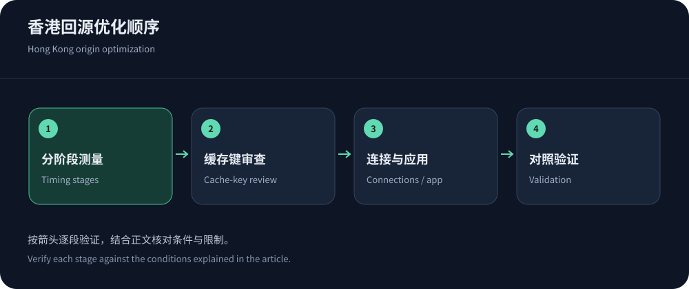
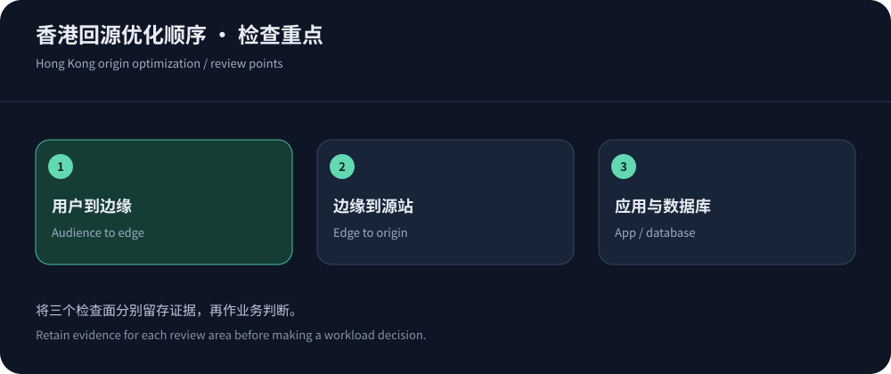

香港CDN能否加速，先看请求是否需要回源
缓存命中的公开资源可以由边缘直接交付，香港节点因此可能减少部分用户跨区域取内容的距离。动态接口和未命中资源仍要经过回源，若源站或数据库在更远区域，收益可能被第二段路径抵消。香港CDN的效果不能只用“靠近大陆”解释，更不能保证所有运营商和所有时间都得到相同延迟。
CDN5可作为区域与安全需求的试点候选，但公开线路标签并非性能结论。本文提供优化方法而非厂商测速排名，产品资料核实于2026年10月14日。先按香港三网验收方法建立基线，再改变配置，才能知道优化究竟发生在哪一段。
TTFB不是一条专线的延迟
用户看到的首字节时间包含请求发出后的网络与处理过程，具体工具的计时起点还可能不同。排障应同时保留DNS、TCP或QUIC连接、TLS、请求等待和内容下载等阶段，不能把总耗时全部归到线路。源站慢查询、边缘挑战、缓存未命中和重新建立连接，都可能表现为更长TTFB。
冷连接与复用连接、HTTP/2与HTTP/3、首次访问与已有缓存必须分开。RFC 9000定义QUIC传输，RFC 9114定义HTTP/3映射。协议可以改变连接和丢包处理方式，却不会消除物理距离，也不保证任何网络下都更快。启用前检查客户端与路径支持，并保留协议回退。


先找最有价值的缓存对象
按对象体积、访问频率和回源成本排序，比只追求全站命中率更有效。大量小图命中可能让请求命中率很好看，但少数大文件仍消耗大部分出网；少量昂贵API即使命中率统计中占比很小，也可能决定数据库压力。应同时查看请求命中、字节命中和回源工作，而不是选一个最漂亮的比例。
| 观察对象 | 可能原因 | 改动前的检查 |
|---|---|---|
| 相同图片反复回源 | 查询参数、Cookie或请求头使缓存键分裂，TTL过短或频繁失效。 | 确认参数是否影响内容，验证版本化资源与响应缓存指令。 |
| 首页快，登录后慢 | 匿名内容命中，登录态需要回源并执行鉴权与数据库查询。 | 关联应用日志，避免把私有页面强制共享来换取命中率。 |
| 发布后源站突增 | 大范围失效或新版本资源同时填充，热门请求集中到源站。 | 检查发布顺序、分批失效、预热范围与源站容量预算。 |
| 命中仍然慢 | 用户到边缘路径、连接建立、对象体积或客户端处理可能占主导。 | 分阶段计时并校验实际服务节点，不能继续盲目加缓存层。 |
缓存键优化，必须先证明内容等价
依据RFC 9111，共享缓存需要尊重响应语义、新鲜度和验证条件。跟踪参数若不改变内容，可以考虑从缓存键中排除；但语言、权限、图片尺寸和版本可能真正改变响应。对每个拟删除维度，使用不同值比较内容与权限，不能只看状态码一样就认定等价。
CloudFront缓存键文档可以帮助理解请求头、Cookie和查询参数的配置关系。还应区分“是否进入缓存键”与“是否转发源站”，各家产品的具体策略需要核对。配置变更后验证匿名与不同账户的隔离，并规划失效，避免旧缓存与新规则混合造成难以复现的问题。
回源优化从连接和应用排队开始
检查源站是否在每次请求重新建立连接、是否有合理的连接复用与超时，以及边缘到源站的证书和Host是否正确。超时过短会诱发失败与重试，过长则可能让队列积压。动态请求应关联应用处理时间，分辨是网络传输、负载均衡排队、数据库锁还是外部服务等待。搬动源站前先确认真正的瓶颈。
若采用中间缓存或源站屏蔽层，确认它减少了多少回源请求，以及故障时如何绕行。多个边缘同时刷新热门对象可能形成填充压力，发布应考虑分批更新和受控预热。预热不是无限向源站发请求；应限制范围和并发，先确保新版本文件已存在，再发布引用它们的页面。
响应头是排查入口，日志才提供完整上下文
保留Cache-Control、Age、Vary、ETag以及厂商提供的缓存状态字段，有助于解释新鲜度和命中行为，但不能只靠一个头判定整个缓存链。多层代理可能重写字段，响应也可能经过验证后继续使用已有对象。应将浏览器看到的响应与边缘、源站日志关联，确认实际发生了什么。
排查时不要为了方便关闭所有缓存指令，也不要把敏感调试信息长期暴露给访客。为测试资源使用明确的版本和可回收路径，记录预期内容校验值。配置修复之后，确认正常页面没有遗留测试头、缓存绕过参数或额外日志开销，避免一次性能排查永久改变生产行为。


用变化前后的同类样本证明收益
一次只改变有限变量，固定测试资源、源站版本和用户分组。记录正常与高峰，保留失败、缓存状态和内容校验；将P50、P95和错误率一起观察。若改动同时更换线路、协议和图片格式，即使总体变快，也无法知道哪项值得保留。对真实用户监测，还应检查设备与访问页面构成是否发生变化。
优化完成后，把规则、验收结果和回退步骤写入运行记录。新页面、营销参数和登录方式都可能重新降低缓存效率，因此需要持续观测。对无法解释的运营商异常，沿节点路径分析继续定位，而不是反复购买更高档位。加速有效的证据是用户完成任务更顺畅、源站工作更可控，且内容依然正确。
如果一轮优化只降低均值而尾部失败增加，应暂停扩量检查。尤其要关注低端设备、移动接入和冷缓存，这些用户最容易在平均数中被忽略。为每次变更设定明确的恢复条件，保存旧配置并确认回退不会引发全站重新填充，性能工程才不会演变成一次不可逆的配置试验。